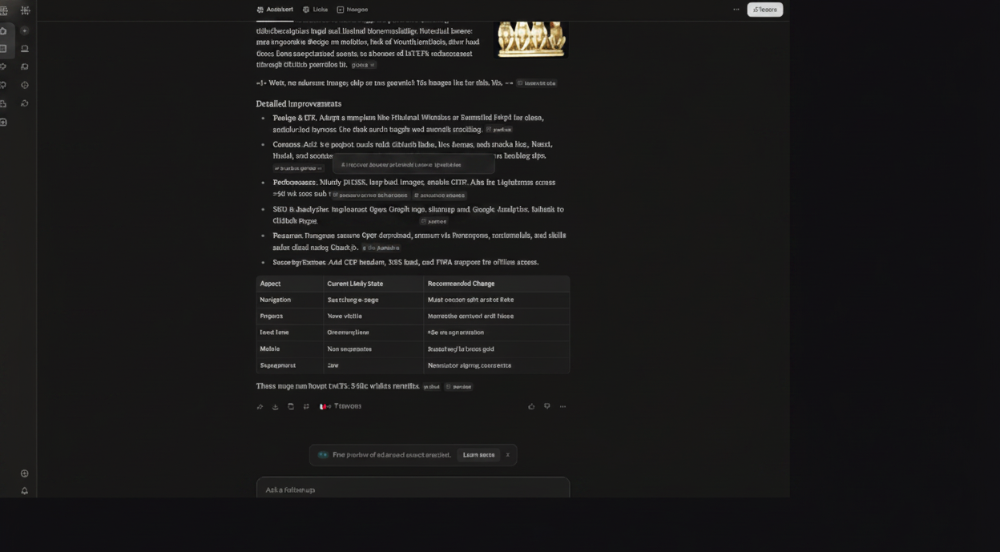

These are personal learning notes
This content reflects my own student-level understanding and is mainly for documentation.
This page contains my personal AI learning notes. These notes represent my current understanding as a student, not official research or expert guidance. I keep this section to document experiments, questions, and ideas while I learn.
These notes are a record of my learning process. Sometimes I summarize concepts, sometimes I write open questions, and sometimes I test simple ideas. The purpose is to improve my understanding over time and to practice technical writing.
I am not presenting this page as a complete or final source. Think of it as a student notebook that is updated as I learn more. Some points may be incomplete, and some ideas may change after I verify new information.
This content reflects my own student-level understanding and is mainly for documentation.
Some sections are based on small tests and may not be fully validated yet.
You may see draft thinking, open questions, and concepts still in progress.
I update this page when I learn better explanations or find more reliable references.
Please confirm important points from trusted books, teachers, and official technical sources.
I want this section to stay meaningful. If this page becomes too small, empty, or only contains a screenshot without useful explanation, I will remove or merge it instead of keeping a low-value page. My goal is quality over quantity.
As I continue learning, I plan to add clearer topic summaries, references to what I studied, and lessons learned from each experiment. That way, visitors can understand both what I explored and what I still need to improve.
For broader context, you can visit my Portfolio page, my About page, and my Personal Wiki guide.

This image is only a preview of my working notes. It does not represent final conclusions.